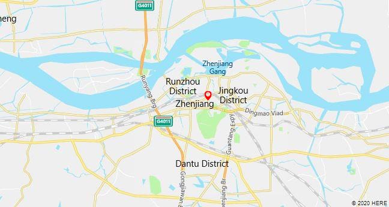

Zhenjiang is a prefecture-level city in Jiangsu Province, China. It lies on the southern bank of the Yangtze River near its intersection with the Grand Canal. It is opposite Yangzhou (to its north) and between Nanjing (to its west) and Changzhou (to its east). Zhenjiang was formerly the provincial capital of Jiangsu and remains as an important transportation hub.

Get to Know Zhenjiang
Enjoy Your Time

Exit and Entry
Transport Informations are provided
-
Zhenjiang Railway Station operates both high speed trains and normal speed trains. 80 kilometers (50 miles) from Nanjing Lukou International Airport. Visitors can use Nanjing Lukou airport since Zhenjiang doesn’t have it’s own airport.
-
Zhenjiang south railway station: is the second train station
-
Nanjing railway station - Zhenjiang railway station
-
Nanjing south railway station - Zhenjiang south railway station:
Adress:No.73, West Zhongshan Road, Runzhou District.
Adress:North Zhanqian Road, Dantu District
From/To Nanjing – Zhenjiang [Jiangsu]
Time Duration: 0h36m-0h52m
Ticket fair: 12.50 CNY to 34.50 CNY
Time Duratoin:0h20m
Ticket Fair:29.50 CNY